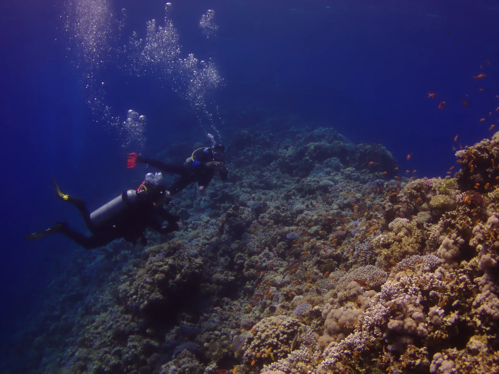

Blue Hole — Dahab
Mer Rouge, Égypte · plongée, snorkeling

Un puits circulaire ouvert dans le récif, bordé de corail intact. Site magnifique en surface — et l'un des plus meurtriers du monde en profondeur, à cause de l'arche.
- Lieu
- Mer Rouge, Égypte
- Niveau
- Expert
- Activités
- plongée, snorkeling
- Type d'eau
- Mer / océan
- Coordonnées
- 28.57, 34.54 (position approximative du secteur)
Dangers à connaître
- L'arche profonde a fait de nombreuses victimes : elle n'est pas un objectif de loisir.
- Profondeur trompeuse, l'eau très claire fait sous-estimer la descente.
- Ne plonge qu'avec un centre local et dans tes limites de brevet.
Le conseil d'Ocean Buddy
Le snorkeling sur le bord du trou est splendide et sans danger : il suffit largement.
Ouvrir dans Ocean Buddy Télécharger sur l'App Store
Source : Description historique Ocean Buddy · vérification externe en attente.